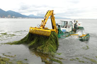
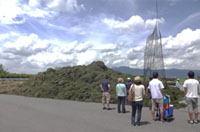

Toda Lab Project Soka University Faculty of Engineering
Projects
The Environment Research and Technology Development Fund from the Ministry of the Environment, Japan
Novel lake ecosystem management by sustainable harvesting and effective utilization of aquatic weed biomass


Left: Aquatic weed harvester owned by Shiga prefecture
"Gengoro". It's running every day during summer.
Right: Harvested weeds are piled up on fishery
harbors. After few days of sun-drying, aquatic weeds are
brought to incineration plant or dumpsite.
{kind=link}
Contents:
In recent years, the excessive growth of freshwater aquatic
weeds has become the major source of various environmental
problems in shallow lakes, rivers and irrigation channel in
Japan. For instance, in South Basin of Lake Biwa (the largest
lake in Japan), submerged-type aquatic weeds such as Egeria
densa, Elodea nuttallii and Potamogeton maackianus have been
covering more than 90% of the lake surface and causing
social/economic problems such as fishery disturbance, foul
odor and deterioration of tourism attractiveness. Both
national and local government of Japan has been dealing with
this urgent issue. The harvesting and treatment of aquatic
weeds have been promoted by "Plan for Conservation of Lake
Water Quality" (the Ministry of the Environment) and "Mother
Lake 21 Plan" (Shiga Prefecture).
Currently, harvested aquatic weeds have been removed mainly by bottom trawling by fishing vessel, but it gives rise to concern about acceleration of arsenic dissolution from lake sediment. In addition, maintaining moderate amount of aquatic weeds is essential for healthy lake ecosystem, since aquatic weeds play a significant role in water purification and habitat for fishes and invertebrates. Therefore, our project aims to find out the effect of various aquatic weed removal methods on biological community, water quality and sediment quality, by establishing several experimental mesocosms in South Basin of Lake Biwa. Throughout this experiment, we will formulate "sustainable aquatic weed management standard".
In the past, harvested aquatic weeds have traditionally been utilized for fertilizer, but currently it has mainly been incinerated due to the popularization of chemical fertilizer. For the biorefinery from aquatic weed biomass, bioethanol production potential has been investigated, but there are several more steps to achieve the implementation such as cost and bioenergy recovery efficiency. On the other hand, anaerobic digestion (AD) has been given its attention in terms of low-cost treatment and feasibility to bioenergy recovery from "wet" organic waste. Most of the AD process has focused only on biogas recovery from carbon fraction of the waste biomass. Therefore, our project aims to establish fundamental technology for effective biorefinery from aquatic weed biomass, by enhancing not only biomethane recovery, but also biorefinery from nutrients (N, P, K) in digestate by producing microalgae biomass.
By establishing "lake ecosystem management standard" and "effective utilization (technology) of aquatic weed biomass", we approach toward the solution of aquatic weed issue.
{kind=link}

Left: Ultimate goal of our research project, which is the formation of Modern "lake-oriented recycling and symbiotic society". Right: Washing and selection of harvested aquatic weeds for our experiments. It was a tough work.